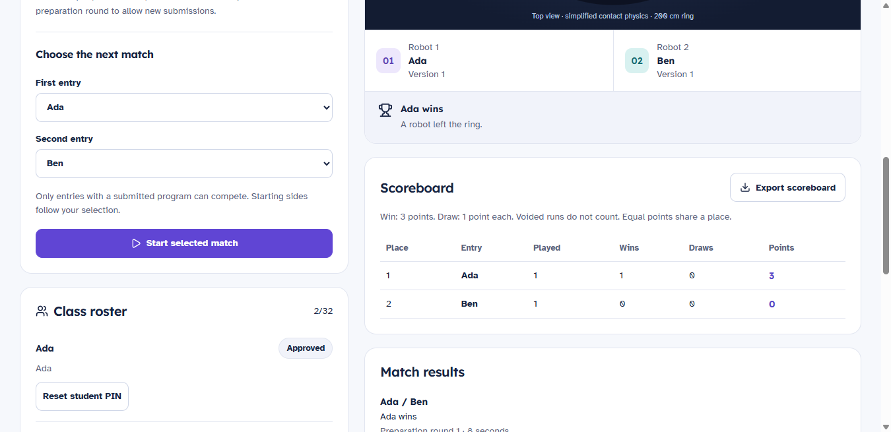

Small blocks. Big thinking.
Snap instructions together. Explore loops, sensors and decisions, then read the Python helper code your blocks describe.
Drag it. Connect it. Run it.Ideas learn to move here
Meet your robotics playground. Build a virtual robot, connect a few blocks, and see what happens next.
Made for curious students and the teachers who inspire them.
A whole lab.
One little workspace.
Build. Code. Try again.
Start with a small instruction. Watch your robot respond. Every experiment gives you something new to work out.
Snap instructions together. Explore loops, sensors and decisions, then read the Python helper code your blocks describe.
Drag it. Connect it. Run it.Choose a robot, try an attachment, or build a custom ground. Change a part and discover how it changes your route.
A playground you can make your own.Follow guided lessons with examples, videos and short checks. Try each idea in its own experiment, keeping your project safe.
Understand it by trying it.A little look inside
Three short recordings from SpikeSim. Choose an experiment, then press play to watch the idea become a route.
The robot repeats its movement and turns to trace a pattern. A loop keeps the instructions short.
Captions describe the action. Videos stay paused until you press play.
For the whole classroom
Bring students together on the same Wi-Fi for teacher-hosted competitions. Give them a task, time to prepare, and a chance to learn from one another.
Classroom networking is in preview. Try your school's Wi-Fi with a second device before planning a session.
Follow development on GitHub
Your next idea starts here
The Windows desktop app keeps your projects on your device. Once installed, your own robotics lab is ready without an internet connection.
All releases on GitHubWe're preparing the first public download. Check back here or follow releases on GitHub.
Download for WindowsWindows 10 / 11 · 64-bit
This preview is unsigned. Windows may show an unknown publisher notice.
Compare the installer's SHA-256 checksum with this value:
A few good questions
No. SpikeSim uses virtual robots and simulated sensors. A real robot can be a great next step, but it isn't needed to explore the lessons or build a program here.
The installed app bundles its simulator, fonts and lessons. Individual practice works offline. Classroom competitions need a shared local network, but no online account or cloud service.
You can read the Python helper code generated from blocks. Direct Python editing isn't available yet. Supported SPIKE word-block projects can be imported, with unsupported instructions explained before replacing a project. SpikeSim does not run SPIKE firmware.
The first Windows release is a preview. Local automated tests and installed-app checks have passed. Testing on more school computers and real classroom networks is still needed. Save important programs as exported project files.
No. SpikeSim is independent educational software, not affiliated with or endorsed by the LEGO Group. Simulated routes and devices may behave differently from physical robots. It doesn't provide official tournament scoring.
Yes. Use GitHub Issues to describe what you tried, what happened and your Windows version. Remove student names or other private information from shared files and screenshots.